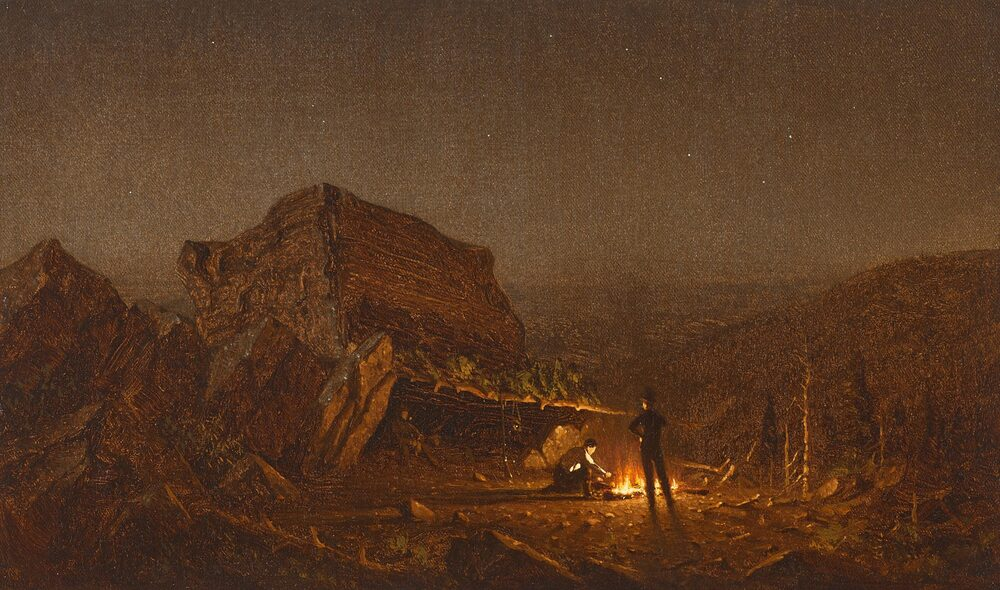

B1 · Travel & Places
Glamping
Camping with a real bed in it — where the trend came from and who it is for.
Reading
Play the audio and follow along, then read it again on your own. Tap or hover over a highlighted word to see what it means.
Glamping, short for "glamorous camping," is a relatively new trend in outdoor recreation and travel. It combines the comfort of a hotel or resort with the experience of camping in nature. Glamping offers an upscale way to enjoy the outdoors, giving people the chance to disconnect from the rush of everyday life while still having modern amenities around them.
One of the key aspects of glamping is the accommodation itself. Instead of a traditional tent and a sleeping bag on the ground, glamping accommodations range from spacious, well-furnished tents to cabins, yurts, treehouses, domes, and even converted vintage trailers. These structures are designed for comfort, convenience, and style. They often have comfortable beds, good linens, electricity, heating or air conditioning, and private bathrooms, and some include hot tubs, fireplaces, or a private deck. Each site has its own character, somewhere between rustic charm and modern elegance.

Glamping sites turn up in striking places: national parks, forests, mountains, deserts, and stretches of coast. Whether a site sits in the middle of a redwood forest, on a cliff above the ocean, or in a quiet meadow, the locations are chosen to give guests remarkable surroundings and a sense of calm.
Much of the appeal is the chance to be close to nature without giving up comfort. Guests can spend the day hiking, biking, fishing, or simply exploring, knowing there is a warm place waiting for them in the evening. Traditional camping can mean wrestling with tent poles, cooking over a fire, and sharing a bathroom block; glamping removes most of that friction. It lets people take the parts of the outdoors they came for and skip the parts they did not.
Many sites add further comforts and services. Some have their own restaurants, where guests eat meals prepared by professional chefs from ingredients grown nearby. Others offer spa treatments, yoga classes, guided nature walks, or organized stargazing. These extras are a large part of the sense of rest and well-being that glamping is sold on.
The appeal is fairly broad. It attracts couples looking for a quiet weekend away and families who want a vacation their children will remember, and it suits anyone who likes the idea of the outdoors but not the discomfort that usually comes with it. It is a way of being in a landscape while keeping the conveniences you are used to at home.
Glamping, then, is a luxurious twist on traditional camping, and its balance of comfort and adventure explains the growth. For a weekend or for a longer stay, it offers an experience that borrows from both the hotel and the campsite — and, for a great many travelers, improves on each of them.
Key Vocabulary
- upscale expensive and aimed at people with money
- amenities useful features or services provided in a place to stay
- a yurt a round tent with solid walls, originally from Central Asia
- linens sheets, pillowcases and towels
- a meadow a field of grass and wild flowers
- to disconnect to step away from work, phones and daily pressures
- well-being the state of being healthy and content
- stargazing looking at the stars for pleasure
Glamping — B1 · Travel & Places · Renan the Teacher, English Language Academy · https://renangrossi.github.io/englishclasses/reading/b1/glamping.html
Interactive Exercises
Practice
Complete each exercise, then click Submit to see your score and an explanation for every answer.
Speaking & Writing
Discussion
There are no right answers here — use these to practice speaking, or write a short answer to each.
- Would you rather spend a weekend glamping or in a traditional tent? Give two reasons.
- The text calls glamping a way to 'skip the parts you did not come for'. Is anything lost by skipping them?
- Describe the best place you have ever stayed. What made it good — the place, the building, or the service?
- A glamping site is opening near your town. Write about 100 words for or against it.